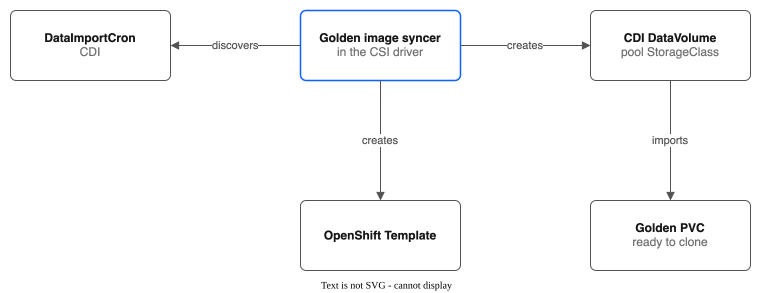

Part 5: Golden Images¶
Hidden feature. Golden images are hidden. The code is kept for possible later use, and a pool that sets
spec.goldenImagesin YAML still works. The console pool form no longer offers golden images. The recommended way to make VMs is the standard OpenShift Virtualization catalog: pick a catalog image and choose the pool's StorageClass for the boot disk. See Create a VM with its boot disk on a pool and CDI compatibility.Tutorial Series: Index | Part 1: Pool Creation | Part 2: Snapshots & Clones | Part 3: Group Snapshots & Hooks | Part 4: Pool Configuration | Part 5 | Part 6: Replication & Failover | Part 7: Monitoring | Part 8: Migration & Console | Part 9: COS Backup Bucket
Step-by-step guide to provisioning KubeVirt golden images on pool storage. Golden images are pre-converted, ready-to-clone OS disk images that make VM creation instant -- no image download or conversion at boot time. This tutorial covers two modes: CDI native mode (cluster-default StorageClass) and the custom syncer (pool-level configuration).
Cluster: ROKS eu-de (OpenShift Virtualization enabled) Zone: eu-de-1
Prerequisites¶
Verify the CSI driver is running:
# Controller pod (6/6 Running)
oc get pods -n kube-system -l app.kubernetes.io/name=ibm-vpc-file-pool-csi,app.kubernetes.io/component=controller
# Node pods (3/3 Running on each schedulable node)
oc get pods -n kube-system -l app.kubernetes.io/name=ibm-vpc-file-pool-csi,app.kubernetes.io/component=node
# CSI Driver registered
oc get csidriver vpc-file-pool.csi.ibm.io
Verify KubeVirt and CDI are installed:
# HyperConverged operator
oc get csv -n openshift-cnv | grep kubevirt
# CDI DataImportCrons (golden image sources)
oc get dataimportcrons -n openshift-virtualization-os-images
CDI DataImportCrons are the source of truth for golden images. They define which OS images are available (CentOS, Fedora, RHEL, etc.) and their container registry URLs. The syncer discovers images from these resources.
Setup¶
Create the tutorial namespace and pool.
export TUTORIAL_NS=pool-tutorial-golden
export POOL_NAME=golden-pool
oc create namespace ${TUTORIAL_NS}
Create a pool configured for KubeVirt (UID 107 ownership is required for QEMU):
cat <<EOF | oc apply -f -
apiVersion: storage.ibmcloud.io/v1alpha1
kind: FileSharePool
metadata:
name: ${POOL_NAME}
spec:
zone: eu-de-1
profile: dp2
shareSizeGB: 100
iops: 100
maxShares: 3
initialShares: 1
autoExpand: true
expandThresholdPercent: 80
allocationStrategy: spread
defaultPermissions: "0777"
defaultUID: 107
defaultGID: 107
EOF
What this does:
- Creates a pool named golden-pool with KubeVirt-compatible settings
- defaultUID: 107 / defaultGID: 107 ensures subdirectories are owned by the QEMU user
- defaultPermissions: "0777" allows virt-handler to access the directories without additional chown
Wait for Ready:
Expected:
Verify the auto-created StorageClass:
Mode 1: CDI Native¶
In CDI native mode, you make the pool's StorageClass the cluster default. CDI's DataImportCrons then automatically provision golden image PVCs using the pool StorageClass instead of the previous default. This is the simplest approach -- no pool-level golden image configuration needed.
Step 1a: Record the Current Default StorageClass¶
Before changing the default, record the current one so you can restore it during cleanup:
ORIGINAL_DEFAULT_SC=$(oc get sc -o json | jq -r \
'.items[] | select(.metadata.annotations["storageclass.kubernetes.io/is-default-class"] == "true") | .metadata.name')
echo "Current default StorageClass: ${ORIGINAL_DEFAULT_SC}"
Step 1b: Set the Pool StorageClass as Cluster Default¶
# Remove default annotation from the current default (if any)
if [ -n "${ORIGINAL_DEFAULT_SC}" ]; then
oc annotate sc ${ORIGINAL_DEFAULT_SC} \
storageclass.kubernetes.io/is-default-class- --overwrite
fi
# Set the pool StorageClass as default
oc annotate sc ${POOL_NAME} \
storageclass.kubernetes.io/is-default-class=true --overwrite
What this does:
- Removes the is-default-class annotation from the previous default StorageClass
- Sets golden-pool as the new cluster default
- Any new PVC that does not specify a storageClassName will use golden-pool
Verify:
Expected:
Step 1c: Trigger CDI Re-Import¶
CDI DataImportCrons create DataVolumes in the openshift-virtualization-os-images namespace. To trigger re-import on the new default StorageClass, delete the existing DataVolumes:
# List current golden image DataVolumes
oc get datavolumes -n openshift-virtualization-os-images
# Delete them to trigger re-import
oc delete datavolumes --all -n openshift-virtualization-os-images
What this does:
- Deletes the existing golden image DataVolumes (which used the previous default StorageClass)
- CDI's DataImportCron controller detects the missing DataVolumes and recreates them
- The new DataVolumes use the current default StorageClass (golden-pool)
Step 1d: Watch CDI Provision New PVCs¶
Wait until the DataVolumes show Succeeded:
NAME PHASE PROGRESS STORAGECLASS AGE
centos-stream9-image-cron Succeeded 100.0% golden-pool 2m
fedora-image-cron Succeeded 100.0% golden-pool 2m
Verify the PVCs are Bound and use the pool StorageClass:
Expected:
NAME STATUS VOLUME CAPACITY ACCESS MODES STORAGECLASS AGE
centos-stream9-image-cron Bound pvc-aaaa... 15Gi RWX golden-pool 3m
fedora-image-cron Bound pvc-bbbb... 15Gi RWX golden-pool 3m
Check pool capacity -- golden images consume pool storage:
Step 1e: Launch a VM from the Golden Image¶
With CDI native mode, the OpenShift Virtualization catalog shows golden images automatically. You can create a VM from the web console (Virtualization > Catalog), or use the CLI:
cat <<EOF | oc apply -f -
apiVersion: kubevirt.io/v1
kind: VirtualMachine
metadata:
name: golden-native-vm
namespace: ${TUTORIAL_NS}
spec:
instancetype:
kind: virtualmachineclusterinstancetype
name: u1.medium
preference:
kind: virtualmachineclusterpreference
name: centos.stream9
runStrategy: Always
dataVolumeTemplates:
- metadata:
name: golden-native-vm-boot
spec:
sourceRef:
kind: DataSource
name: centos-stream9-image-cron
namespace: openshift-virtualization-os-images
storage:
accessModes:
- ReadWriteMany
storageClassName: ${POOL_NAME}
resources:
requests:
storage: 15Gi
template:
spec:
domain:
devices:
disks:
- name: rootdisk
bootOrder: 1
interfaces:
- masquerade: {}
name: default
networks:
- name: default
pod: {}
volumes:
- dataVolume:
name: golden-native-vm-boot
name: rootdisk
- cloudInitNoCloud:
userData: |
#cloud-config
user: centos
password: goldentest123
chpasswd:
expire: false
name: cloudinitdisk
EOF
What this does: - Creates a VM that clones the golden image via CDI's DataSource reference - CDI creates a new DataVolume that clones the golden image PVC - The clone lands on the pool StorageClass (fast subdirectory copy, no VPC share creation)
Watch the VM start:
Note: CDI native mode works best when you want all golden images on pool storage. If you only want specific images or need to target specific namespaces, use Mode 2 (Custom Syncer) instead.
Step 1f: Clean Up Native Mode Resources¶
# Delete the test VM
oc delete vm golden-native-vm -n ${TUTORIAL_NS} --timeout=60s --ignore-not-found
# Restore the original default StorageClass
oc annotate sc ${POOL_NAME} \
storageclass.kubernetes.io/is-default-class- --overwrite
if [ -n "${ORIGINAL_DEFAULT_SC}" ]; then
oc annotate sc ${ORIGINAL_DEFAULT_SC} \
storageclass.kubernetes.io/is-default-class=true --overwrite
fi
# Verify the original default is restored
oc get sc | grep "(default)"
Mode 2: Custom Syncer¶
The custom syncer is a background controller built into the CSI driver. When configured via spec.goldenImages, it discovers CDI DataImportCron images, imports each one with a CDI DataVolume on the pool StorageClass, and creates ready-to-clone PVCs and OpenShift Templates in target namespaces.

Step 2a: Configure the Pool with Golden Images¶
cat <<EOF | oc apply -f -
apiVersion: storage.ibmcloud.io/v1alpha1
kind: FileSharePool
metadata:
name: ${POOL_NAME}
spec:
zone: eu-de-1
profile: dp2
shareSizeGB: 100
iops: 100
maxShares: 3
initialShares: 1
autoExpand: true
expandThresholdPercent: 80
allocationStrategy: spread
defaultPermissions: "0777"
defaultUID: 107
defaultGID: 107
goldenImages:
enabled: true
targetNamespaces:
- ${TUTORIAL_NS}
imageFilter:
- centos
refreshInterval: "1h"
pvcSizeGB: 15
EOF
What this does:
- enabled: true activates the golden image syncer for this pool
- targetNamespaces lists namespaces where golden PVCs and Templates are created
- imageFilter: ["centos"] limits syncing to images whose names contain "centos" (substring match)
- refreshInterval: "1h" checks for new images every hour
- pvcSizeGB: 15 creates 15 GB PVCs for golden images
Note: The syncer skips processing if the pool StorageClass is already the cluster default (CDI native mode handles it). Make sure you restored the original default in Step 1f before proceeding.
The syncer starts its first cycle 30 seconds after the controller starts, then runs every refreshInterval. Since we just updated the pool spec, the reconciler triggers a sync within one reconcile interval (~30 seconds).
Step 2b: Watch the DataVolumes¶
The syncer creates a CDI DataVolume golden-<image> for each discovered image that matches the filter. CDI downloads the image and converts it to raw format. The target namespace needs no extra permissions.
Expected (after the syncer runs):
Wait for the phase to be Succeeded:
On rovslab, a CentOS Stream 9 import took from 40 seconds to 5 minutes. The progress can stay near 99% for a few minutes while CDI finishes the image.
imageFilter: [centos] is a substring match, so it also picks up centos-stream10-image-cron. You get two DataVolumes, PVCs and Templates (centos-stream9-nfs-pool and centos-stream10-nfs-pool). Use centos-stream9 as the filter to get only one.
The pool status and the Template of an image appear on the next syncer cycle after its DataVolume succeeds. With two images, one can show Syncing for a few minutes after the other is Ready. Run the next steps with a Template that exists.
If the phase is Failed, run oc describe dv golden-centos-stream9-image-cron -n ${TUTORIAL_NS} to see the events. To retry, delete the DataVolume. The syncer makes a new one on the next cycle.
Step 2c: Verify Golden PVCs¶
Expected:
NAME STATUS VOLUME CAPACITY ACCESS MODES STORAGECLASS AGE
golden-centos-stream9-image-cron Bound pvc-cccc... 15Gi RWX golden-pool 5m
CDI makes the PVC for the DataVolume. The pool status in Step 5 shows Ready when the DataVolume has succeeded.
Step 2d: Verify OpenShift Templates¶
The syncer creates an OpenShift Template for each golden image, enabling one-click VM creation from the Virtualization catalog:
Expected:
NAME DESCRIPTION PARAMETERS OBJECTS
centos-stream9-nfs-pool CentOS Stream9 VM with boot disk on IBM VPC NFS pool storage... 4 3
Inspect the template parameters:
The template includes: - NAME: VM name (auto-generated with random suffix) - BOOT_DISK_SIZE: Boot disk size (default 15Gi) - DATA_DISK_SIZE: Data disk size (default 10Gi) - CLOUD_USER_PASSWORD: Auto-generated password for cloud-init
Step 2e: Create a VM from the Golden Image Template¶
oc process centos-stream9-nfs-pool -n ${TUTORIAL_NS} \
-p NAME=golden-syncer-vm \
-p BOOT_DISK_SIZE=15Gi \
-p DATA_DISK_SIZE=10Gi \
-p CLOUD_USER_PASSWORD=goldentest123 \
| oc apply -n ${TUTORIAL_NS} -f -
What this does:
- Processes the template with the given parameters
- Creates a boot PVC (cloned from the golden image PVC via dataSource)
- Creates a data PVC (blank)
- Creates a VirtualMachine with both disks attached
Watch the VM start:
The boot PVC clone is a subdirectory copy within the same NFS share, so it completes in seconds:
Expected:
golden-syncer-vm-boot Bound pvc-dddd... 15Gi RWX golden-pool 30s
golden-syncer-vm-data Bound pvc-eeee... 10Gi RWX golden-pool 30s
Once the VM is Running, connect to the console:
Login with the password you provided (goldentest123). Press Ctrl+] to exit.
Verify Golden Image Status¶
The pool's status.goldenImages field tracks the syncer's progress for each discovered image across all target namespaces.
Step 5a: View the Full Status¶
Expected:
goldenImages:
- name: centos-stream9-image-cron
sourceURL: docker://quay.io/containerdisks/centos-stream9:latest
namespaces:
- namespace: pool-tutorial-golden
phase: Ready
pvcName: golden-centos-stream9-image-cron
templateName: centos-stream9-nfs-pool
dataSourceName: centos-stream9-image-cron-pool-tutorial-golden-nfs-pool
lastSyncTime: "2026-02-25T..."
message: Golden image ready
Step 5b: Understanding the Status Fields¶
| Field | Description |
|---|---|
name |
The DataImportCron name from openshift-virtualization-os-images |
sourceURL |
The container registry URL where the OS image is pulled from |
namespaces[].namespace |
The target namespace for this golden image |
namespaces[].phase |
Sync state: Pending, Syncing, Ready, or Failed |
namespaces[].pvcName |
Name of the golden image PVC (e.g., golden-centos-stream9-image-cron) |
namespaces[].templateName |
Name of the OpenShift Template for VM creation |
namespaces[].dataSourceName |
CDI DataSource name for the InstanceTypes catalog tab |
namespaces[].lastSyncTime |
Timestamp of the last successful sync |
namespaces[].message |
Human-readable status message |
Step 5c: Phase Meanings¶
| Phase | Description |
|---|---|
Pending |
The syncer has not yet made the DataVolume |
Syncing |
The CDI DataVolume is importing the image |
Ready |
The DataVolume phase is Succeeded and the Template has been created |
Failed |
An error occurred (check message for details) |
If a golden image shows Failed, check the DataVolume:
To retry, delete the DataVolume. The syncer makes a new one on the next cycle. If the message says the DataVolume "was not made by pool", a DataVolume with the same name already exists that the pool did not make. Delete it, or use a different name.
Step 5d: Verify the CDI DataSource¶
The syncer creates a CDI DataSource in openshift-virtualization-os-images so that pool-backed golden images appear in the InstanceTypes catalog tab in the OpenShift console:
oc get datasources -n openshift-virtualization-os-images -l pool.storage.ibmcloud.io/golden-image=true
Expected:
The DataSource points cross-namespace to the golden PVC in the target namespace:
oc get datasource centos-stream9-image-cron-pool-tutorial-golden-nfs-pool -n openshift-virtualization-os-images -o yaml
Cleanup¶
Clean up all resources created in this tutorial.
# 1. Delete VMs
oc delete vm --all -n ${TUTORIAL_NS} --timeout=60s --ignore-not-found
# 2. Wait for VMIs to terminate
for i in $(seq 1 15); do
oc get vmi -n ${TUTORIAL_NS} -o name 2>/dev/null | grep -q . || break
sleep 2
done
# 3. Delete pods, golden DataVolumes and PVCs
oc delete pods --all -n ${TUTORIAL_NS} --force --grace-period=0 --ignore-not-found
oc delete dv --all -n ${TUTORIAL_NS} --timeout=60s --ignore-not-found
oc delete pvc --all -n ${TUTORIAL_NS} --timeout=60s --ignore-not-found
# 4. Delete syncer-created Templates
oc delete templates -n ${TUTORIAL_NS} -l pool.storage.ibmcloud.io/golden-image=true --ignore-not-found
# 5. Delete syncer-created DataSources
oc delete datasources -n openshift-virtualization-os-images \
-l pool.storage.ibmcloud.io/golden-image=true --ignore-not-found
# 6. Grace period for CSI to cascade SubVolume deletes
sleep 5
# 7. Force-clean orphan SubVolumes
for sv in $(oc get subvolumes.storage.ibmcloud.io \
-l storage.ibmcloud.io/pool=${POOL_NAME} -o name 2>/dev/null); do
oc patch "$sv" --type=merge -p '{"metadata":{"finalizers":null}}'
done
oc delete subvolumes.storage.ibmcloud.io \
-l storage.ibmcloud.io/pool=${POOL_NAME} --ignore-not-found
# 8. Delete pool-owned PVs
oc get pv -o json | jq -r "
.items[]
| select(.spec.csi.driver == \"vpc-file-pool.csi.ibm.io\")
| select(.spec.csi.volumeAttributes.pool == \"${POOL_NAME}\")
| .metadata.name" | xargs -r oc delete pv
# 9. Delete pool (force-remove finalizer if stuck)
oc delete filesharepool ${POOL_NAME} --timeout=60s --ignore-not-found || {
oc patch filesharepools.storage.ibmcloud.io ${POOL_NAME} \
--type=merge -p '{"metadata":{"finalizers":null}}'
oc delete filesharepool ${POOL_NAME} --ignore-not-found
}
# 10. Restore original default StorageClass (if changed in Mode 1)
if [ -n "${ORIGINAL_DEFAULT_SC}" ]; then
oc annotate sc ${POOL_NAME} \
storageclass.kubernetes.io/is-default-class- --overwrite 2>/dev/null
oc annotate sc ${ORIGINAL_DEFAULT_SC} \
storageclass.kubernetes.io/is-default-class=true --overwrite
fi
# 11. Delete namespace
oc delete namespace ${TUTORIAL_NS} --timeout=60s --ignore-not-found
# 12. Verify VPC shares are being deleted
ibmcloud is shares
Quick Reference¶
| What | Command |
|---|---|
| Pool golden image status | oc get filesharepool <pool> -o yaml \| grep -A30 goldenImages |
| Golden PVCs | oc get pvc -n <ns> -l pool.storage.ibmcloud.io/golden-image=true |
| Golden DataVolumes | oc get dv -n <ns> |
| DataVolume events | oc describe dv golden-<image> -n <ns> |
| Golden Templates | oc get templates -n <ns> -l pool.storage.ibmcloud.io/golden-image=true |
| CDI DataSources | oc get datasources -n openshift-virtualization-os-images -l pool.storage.ibmcloud.io/golden-image=true |
| CDI DataImportCrons | oc get dataimportcrons -n openshift-virtualization-os-images |
| Process template | oc process <template> -n <ns> -p NAME=<vm> \| oc apply -n <ns> -f - |
| Default StorageClass | oc get sc \| grep "(default)" |
| Set default SC | oc annotate sc <name> storageclass.kubernetes.io/is-default-class=true |
| Controller logs (syncer) | oc logs -n kube-system -l app.kubernetes.io/component=controller -c csi-controller --tail=100 \| grep -i golden |
GoldenImageConfig Reference¶
| Field | Type | Default | Description |
|---|---|---|---|
enabled |
bool | (required) | Activates the golden image syncer for this pool |
targetNamespaces |
[]string | (required, min 1) | Namespaces where golden PVCs and Templates are created |
imageFilter |
[]string | (optional) | Substring filters for image names (empty = sync all) |
refreshInterval |
string | "24h" | How often the syncer checks for new images (Go duration) |
pvcSizeGB |
int64 | 15 | Size of golden image PVCs in GB (min 5) |
What's Next¶
Now that you have golden images provisioned on pool storage, explore cross-region disaster recovery:
- Part 6: Replication & Failover -- Cross-region DR with direct NFS and driver-to-driver replication modes
- Part 7: Monitoring -- Prometheus metrics, alerts, and Grafana dashboards
- Part 8: Migration & Console -- PVC migration tool and OpenShift console plugin